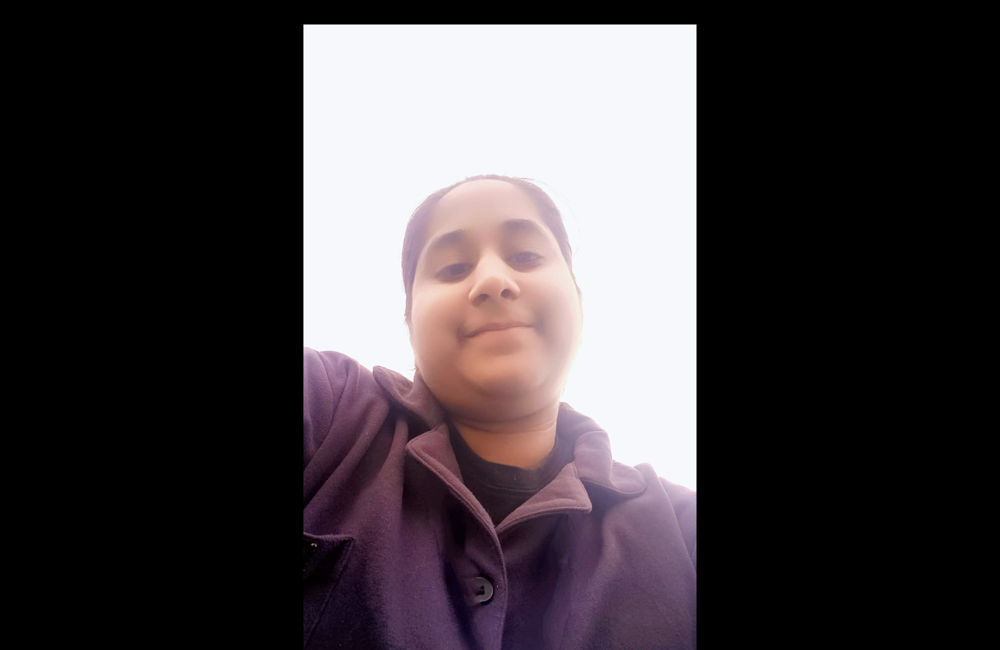

I am a B.Tech CSE first year student.
Hello! I'm Lakshita Kalra, a passionate and curious first-year B.Tech Computer Science student. Ever since I discovered the world of technology, I’ve been deeply fascinated by how it can be used to innovate, solve problems, and bring creative ideas to life.
My journey into tech started with programming in C++, where I learned the power of logic and problem solving. From there, my interests expanded into Artificial Intelligence — the idea of machines that can think, learn, and adapt just like us absolutely excites me. I'm currently exploring how AI can be used in real-world applications, and it's a space I hope to contribute to in the future.
But I’m not just about code. I’m also a visual thinker and a storyteller. I enjoy video editing, poster designing, and creating engaging content that communicates ideas clearly and beautifully. Tools like Canva allow me to blend creativity with clarity — a balance I try to bring into everything I do.
I've had the chance to collaborate on exciting projects like InStock, a web-based inventory management system built and working as a team member on real-world projects has helped me grow not just technically but also as a collaborator and communicator.
Outside of academics and tech, I enjoy spending time thinking deeply, exploring new topics in AI, and always finding new ways to learn something useful. Whether it’s writing code, designing visuals, or brainstorming new ideas — I bring energy, curiosity, and a hunger to keep improving.
I believe the best creations come from combining logic with imagination. I'm on a mission to keep growing, building, and creating things that make a difference.
“The best way to predict the future is to create it.” — Let’s create something amazing!